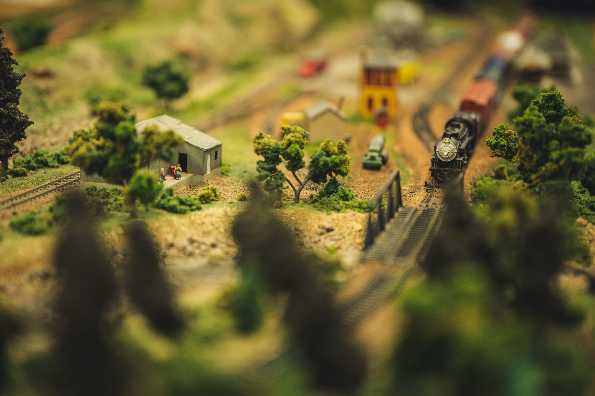

Quand les trains miniatures racontent des histoires
Les réseaux miniatures ne sont pas seulement des jouets sophistiqués : ce sont de véritables fresques vivantes qui donnent vie à des époques entières. Chaque décor, chaque locomotive et chaque figurine témoigne d'un savoir-faire minutieux et d'un souci du détail qui captivent petits et grands. En observant ces maquettes, on découvre bien plus qu'un passe-temps : on plonge dans un monde où l'imaginaire et la mémoire collective se rejoignent.
Nos bénévoles et maquettistes investissent des centaines d'heures dans la création de ces univers réduits. Les maisons sont peintes à la main, les arbres façonnés un à un, et les trains eux-mêmes restaurés ou construits avec passion. Chacune de ces pièces raconte une histoire, parfois inspirée de souvenirs personnels, parfois d'archives photographiques qui permettent de recréer fidèlement des lieux disparus.
Le résultat est saisissant : devant ces paysages animés, on retrouve une part de l'émerveillement de l'enfance. Les trains miniatures deviennent alors un pont entre les générations, un moyen de raconter le Québec autrement, à travers la précision d'un détail ou le charme d'une gare disparue.